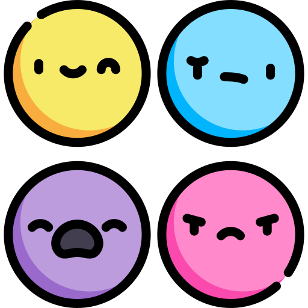

Expressions
Phrases that express various emotional responses
| Term | Translation | Audio |
|---|---|---|
| I am afraid | nehjı | |
| I am angry | éhchʼé | |
| I am happy | sı̨nı́é | |
| I am hungry | déehndı́e | |
| I am hyper | dahdzodehndıh | |
| I am lonely | ǫ́enı́deɂá | |
| I am sleepy | semexı̨ | |
| I am worried | xǫhthehtı́ | |
| I care or look after her or him | mekʼéhndı́h | |
| I love him or her | meghǫhnı́etǫ | |
| it touched me or I felt it | sédéhdıh | |
| she or he is crying | etse | |
| she or he is praying | xazhadetı | |
| she or he is singing | ejı̨ |
| Term | Translation | Audio |
|---|---|---|
| how extreme | áhwee | |
| how scary | edúu | |
| it touch him/her/it or he/she/it felt it | medéhdıh | |
| it’s very cold to touch | elóo | |
| longing for something | someone | e-e-e-e | |
| oh | ǫǫǫǫ | |
| ouch | eyáo | |
| proud of something | wáhwée | |
| stinks | déhtsʼı | |
| surprise! | éh! | |
| what is impossible | azhıı dúwé | |
| you could get burned! | eshóo |